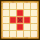
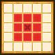
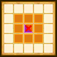

| Lv: | 150 |
|---|---|
| HP: | |
| MP: | |
| ATK: | |
| DEF: | |
| AGL: | |
| WIS: | |
| Move: | |
| Weight: | 60 |
| Weaknesses: | / | ||||
|---|---|---|---|---|---|
| Resistances: | / | ||||
| Immunities: |
| Family/Subfamily: | / | Role: | Element: |
|---|
Note: All perks/abilities denoted with an * are using unofficial translations
| Abilities | ||||||
|---|---|---|---|---|---|---|
| Level | Type | Name | MP | Element | Range | Description |
| 1 | Mystic Healing* 魔導のいやし |
62 |  |
 1-2 (incl. self) |
Heals a moderate amount of HP and grants minor regeneration to all allies in area of effect for 3 turns | |
| 33 | One-Eyed Spark* ひとつめスパーク |
136 |  2-4 |
Deals major Zap-type spell damage to all enemies in area of effect, occasionally lowers Spell Res for 3 turns | ||
| 54 | Lunatick Tempest* メーダテンペスト |
93 |  1-3 |
Deals moderate Woosh-type physical damage (210% potency) to 1 enemy in purple area and occasionally lowers DEF for 3 turns, deals moderate physical damage (200% potency) to all enemies in orange area and occasionally lowers DEF for 3 turns | ||
| 80 |  |
Forbidden Trelixir* 禁断の秘薬 |
94 | |
 Rhombus (L) (incl. self) |
Heals a major amount of HP and restores a moderate amount of MP for all allies in area of effect, grants a barrier that that takes up to 500 damage for all allies in area of effect for 99 turns Turns needed: 2 turns (Times usable: 2) |
| Base Perks | ||
|---|---|---|
| Level | Name | Description |
| 1 | Max HP +30 | Raises max HP by 30 |
| 1 | AGL +20 | Raises max AGL by 20 |
| 1 | Demon Dash* デビルダッシュ |
Battle start: Raises AGL, Move, and reduces damage taken by 30% for 3 turns |
| 1 | Show No More Mercy!* もっとガンガンいこうぜ！ |
When attacking: Triggers Show No More Mercy!*, up to 10 times per battle (Show No More Mercy!*: Raises physical and spell potency/recovery of all allies in large rhombus area of effect (incl. self) for 3 turns) |
| 110, 120, 130, 140 | Lunatick Tempest* potency +2% | Raises Lunatick Tempest* potency by 2% |
| 110, 120, 130, 140 | Forbidden Trelixir* recovery +2% | Raises Forbidden Trelixir* recovery by 2% |
| 150 | Ability Potency/Recovery +2% | Raises ability potency/recovery by 2% |
| Awakening Perks | ||
|---|---|---|
| Awakening | Name | Description |
| 1 | Demonic Toolkit* 悪魔の道具箱 |
When an ally (incl. self) makes a physical attack: Triggers Demonic Party Booster* if ally is within 1 to 3-space range (incl. self) (Demonic Party Booster*: Raises 1 ally's ATK for 3 turns (self: 4 turns), raises 1 Hero or Demon ally's damage dealt for 3 turns (self: 4 turns)) When an ally (incl. self) makes a spell attack: Triggers Demonic Kapingster* if ally is within 1 to 3-space range (incl. self) (Demonic Kapingster*: Raises 1 ally's WIS for 3 turns (self: 4 turns), raises 1 Hero or Demon ally's damage dealt for 3 turns (self: 4 turns)) |
| 2 | Bang Res +25 | Raises Bang resistance by 25 |
| 3 | Young Mystic* 魔導少年 |
Action start: Heals 100 HP for all allies in the surrounding large rhombus (incl. self) Before HP hits 0: If there are 3 or more Hero or Demon allies (incl. self) in the party: Preserves HP at 1, 1 time per battle This perk can be triggered by poison, special effect spaces, ally attacks, and reflected attacks, as well as counterattacks, follow-ups, and other attacks or effects triggered by perks |
| 3, 5 | Lunatick Tempest* potency +5% | Raises Lunatick Tempest* potency by 5% |
| 3, 5 | Forbidden Trelixir* recovery +5% | Raises Forbidden Trelixir* recovery by 5% |
| 4 | Crack Res +25 | Raises Crack resistance by 25 |
| 5 | Spell Reflect Shield | Battle start: Grants a barrier that reflects spell attacks for 2 turns |
| 1, 2, 3, 4, 5 | Stats Up | Raises HP, MP, ATK, DEF, WIS and AGL by 5% |